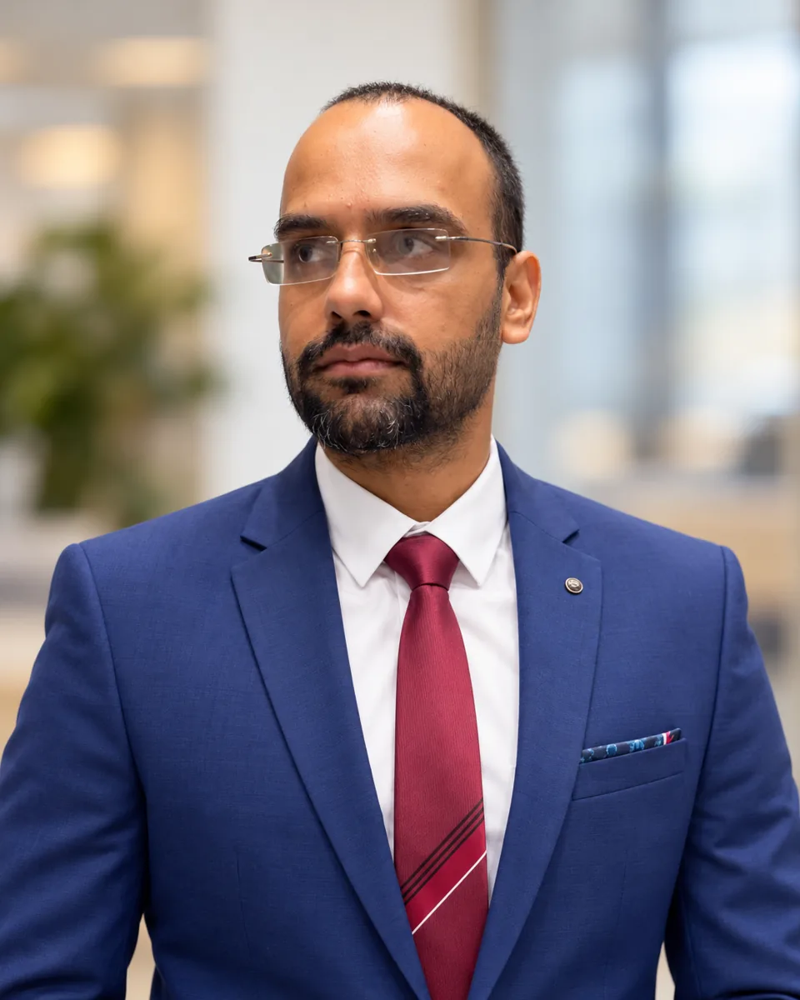
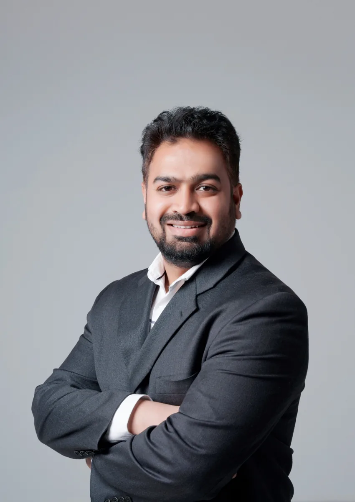
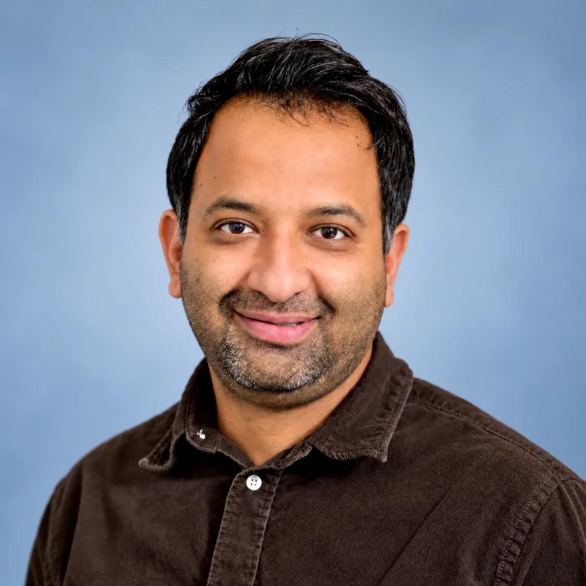
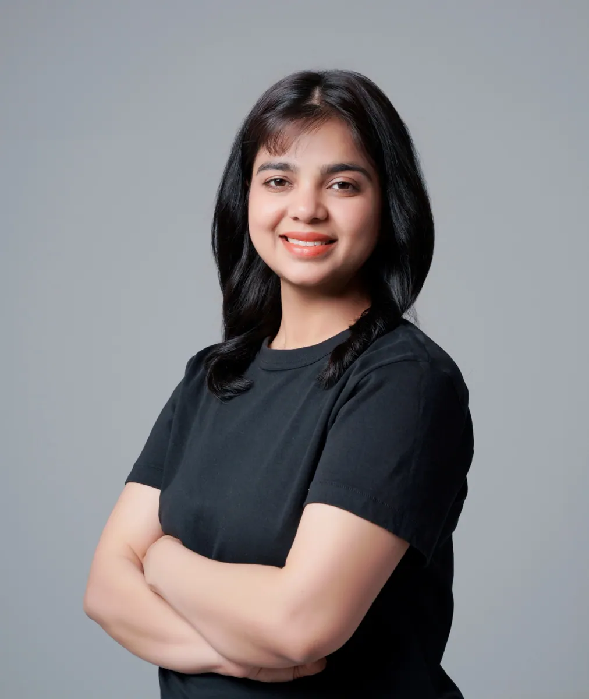
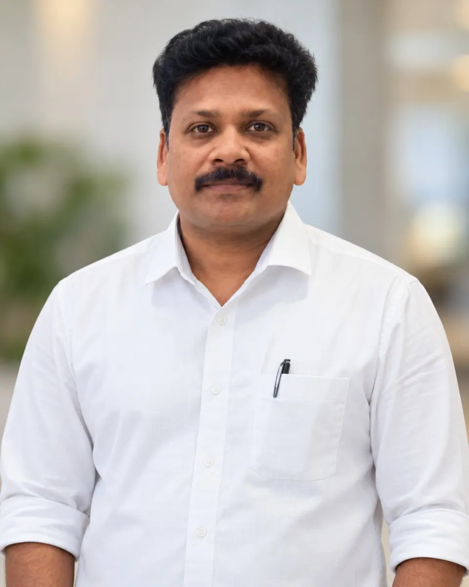
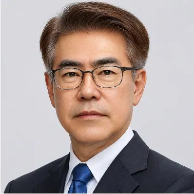
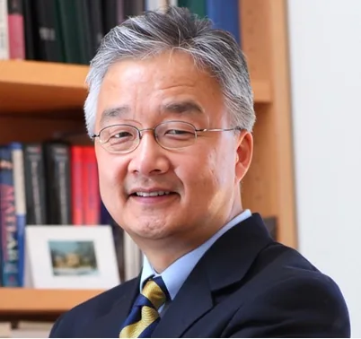

Digvijay Dahiya
NIT Andhra Pradesh, India · Enzyme biotechnology, membrane separation, data-driven bioprocess optimization.
Principal Investigator, confirmed collaborators, research advisors and future team members.

Associate Professor Grade 1 · School of Biosciences and Technology · VIT-AP University
Dr. Sharma leads SIBES. His research spans integrated and autonomous bioprocessing, microfluidics, nucleic acid therapeutics, smart biochips, process analytics and computational bioengineering.
Education: Ph.D. Biotechnology (2022), NIT Raipur; M.Tech. Biotechnology (2015); B.Tech. Biotechnology (2012), Kurukshetra University.
Experience: Postdoctoral Researcher, POSTECH, South Korea (2022–2026); VIT-AP University (2026–present).

NIT Andhra Pradesh, India · Enzyme biotechnology, membrane separation, data-driven bioprocess optimization.

Sustainable materials, resource valorization, bioproducts and life-cycle assessment. Affiliation to be reconfirmed before publication.

Associate Professor Grade 1, VIT-AP University · Molecular diagnostics, microfluidic and electrochemical biosensors, synthetic biology and epigenetics.
Acknowledging the mentorship that informed the Principal Investigator’s research journey. These advisors are not represented as current SIBES team members.

PhD Research Advisor · NIT Raipur, India · 2016–2021.

Postdoctoral Research Advisor · POSTECH, South Korea · 2022–2025.

Postdoctoral Research Mentor · K-BIGHEART, POSTECH · 2026.
Future group members will be featured here. There are no alumni to list at present.